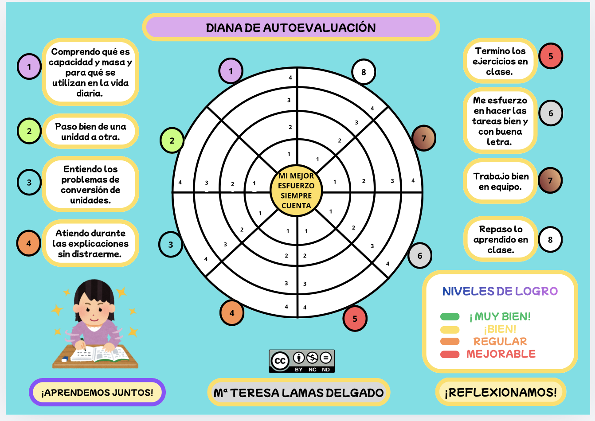
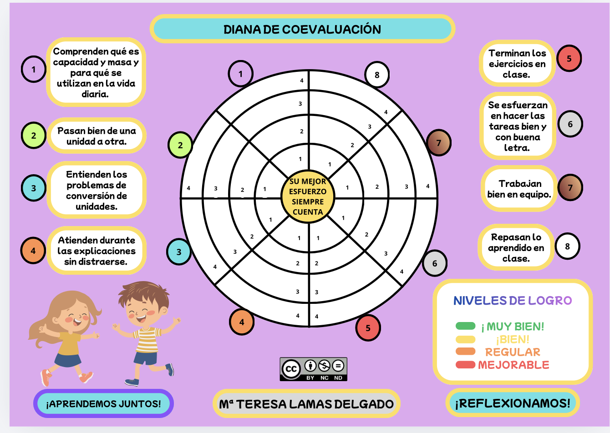

Dianas de autoevaluación y coevaluación
Este instrumento se usará al final del proyecto, tras una breve reflexión guiada sobre lo aprendido en cada área. Cada alumno recibirá una fotocopia de las dianas y se le pedirá que coloree los distintos apartados. Los alumnos completarán la diana de forma individual y en un ambiente de apoyo, compartiendo luego sus reflexiones en grupo.
La diana permitirá identificar patrones comunes en las actitudes y hábitos del grupo, generando datos valiosos sobre el impacto del proyecto en la conciencia de los alumnos respecto a la presencia de las matemáticas en la cocina. Este análisis se utilizará para orientar futuras intervenciones pedagógicas y para reforzar aspectos del proyecto en próximas unidades.
A continuación se muestras las dos dianas: autoevaluación y coevaluación.


Dianas creadas por la autora con Canva
A partir de las dianas de autoevaluación y coevaluación, el objetivo con el alumnado va más allá de “poner una nota”. Está claramente orientado a desarrollar competencias de reflexión, participación y mejora continua.
🎯 OBJETIVO DE ESTAS DIANAS CON EL ALUMNADO
El uso de las dianas de autoevaluación y coevaluación tiene como finalidad que el alumnado reflexione sobre su propio aprendizaje y el de sus compañeros, valorando distintos aspectos del trabajo realizado durante el proyecto.
En resumen, a través de ellas se pretende:
- Desarrollar la capacidad de autoevaluarse y coevaluar de forma crítica y constructiva.
- Tomar conciencia del propio proceso de aprendizaje, identificando logros y aspectos a mejorar.
- Fomentar el esfuerzo y la responsabilidad, dando importancia al proceso y no solo al resultado (“mi mejor esfuerzo siempre cuenta”).
- Mejorar la comprensión de los contenidos, como la capacidad, masa y conversión de unidades, aplicándolos a situaciones reales.
- Promover hábitos de trabajo adecuados, como la atención, el orden, la constancia y la finalización de tareas.
- Impulsar habilidades sociales, como el trabajo en equipo y el respeto hacia el trabajo de los demás.
- Favorecer la evaluación formativa, permitiendo al docente recoger información para ajustar la enseñanza.